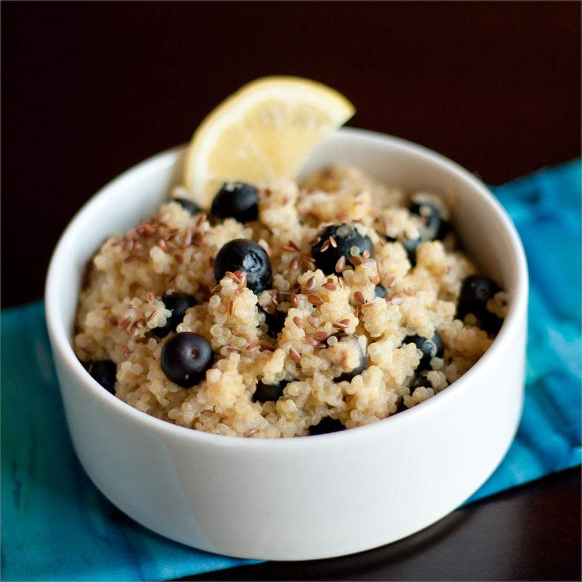

Home
Blueberry Lemon Breakfast Quinoa

Description
Sweet blueberries and tart lemon pair well in this alternative to oatmeal
Ingredients
- 1 cup quinoa
- 2 cups nonfat milk
- 1 pinch salt
- 2 tablespoons white sugar
- 3 tablespoons maple syrup
- ½ lemon, zested
- 1 cup blueberries
- 2 teaspoons flax seed
Steps
-
Rinse quinoa in a fine strainer with cold water to remove bitterness
until water runs clear and is no longer frothy.
-
Heat milk in a saucepan over medium heat until warm, 2 to 3 minutes.
Stir quinoa and salt into the milk; simmer over medium-low heat until
much of the liquid has been absorbed, about 20 minutes. Remove saucepan
from heat. Stir maple syrup and lemon zest into the quinoa mixture.
Gently fold blueberries into the mixture.
-
Divide quinoa mixture between 2 bowls; top each with 1 teaspoon flax
seed to serve.